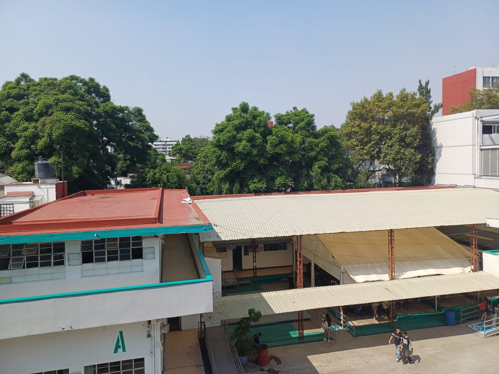
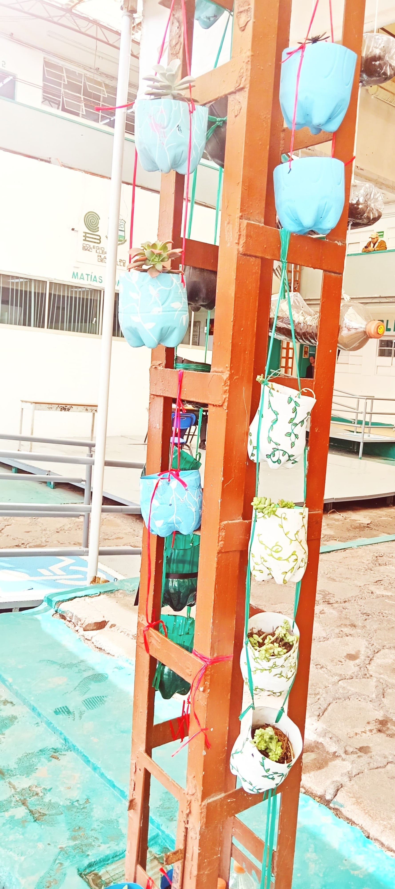
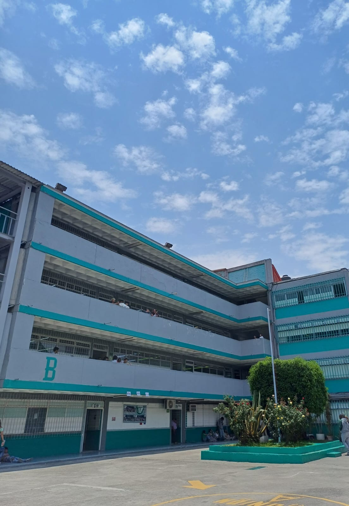
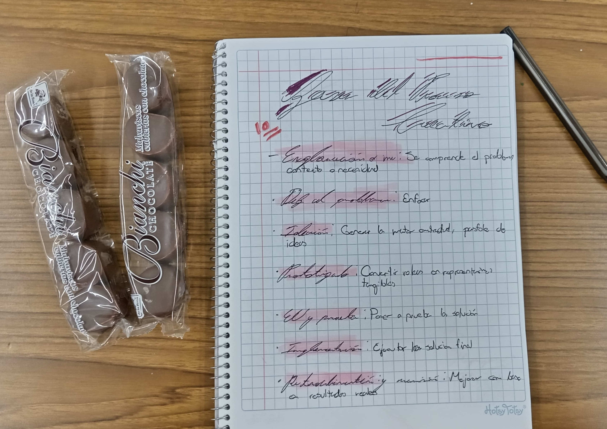
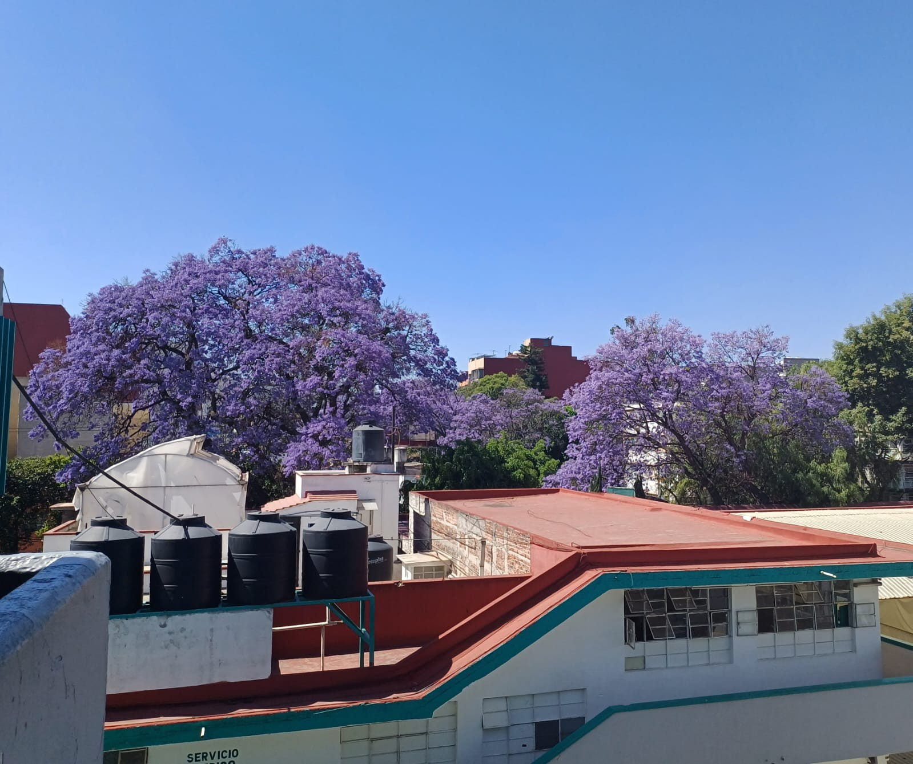
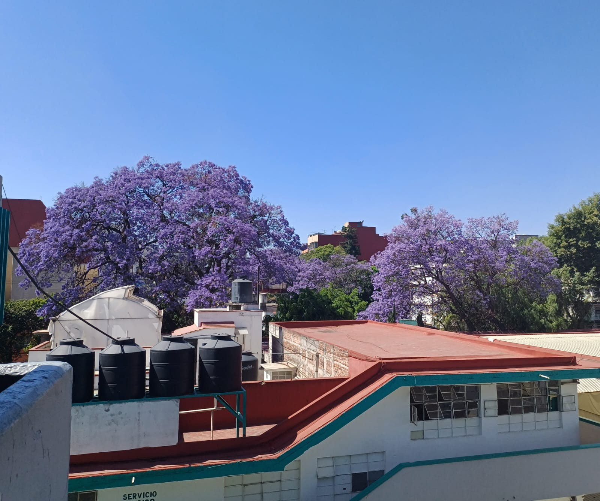
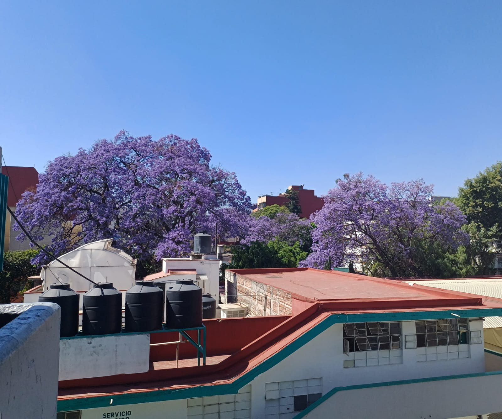

Bienvenidos a nuestra pagina
¡Juntos por un Plantel 20 más sostenible y saludable!
Imágenes de Nuestra Comunidad




 


Sigue avanzando para descubrir más bachi-información.
Cuidado de la basura
En el Plantel 20, estamos comprometidos en disminuir la acumulacion de la basura que se genera por la comunidad del plantel:
- Aplicar la regla de las 3R: Aprovechar al máximo los recursos que todavia tienen una segunda oportunidad.
- Informacion al respecto: Dar a la comunidad del plantel educacion respecto a algunas medidas, consejos, sugerencias,etc.
- Cuidado las áreas verdes: Seguirle dando mantenimiento y cuidados necesarios a estas áreas que se encuentran en la escuela.
- Poner botes de basura: Se coloquen más botes de basura como tambien que sean de reciclaje en puntos especificos donde la comunidad los vean a simple vista.
Una alimentacion saludable
Para cuidar nuestra alimentacion, que dejamos algunos consejos para que lo lleves a cabo en tu vida diaria:
- Llevar comida preparada desde casa: Como fruta, sadwichs, semillas o nueces,etc.
- Charlas y talleres sobre nutrición: Tener este tipo de informacion hace que nos informemos que alimentacion podemos empezar a llevar en la escuela como tambien poderla implementar en nuestra vida cotidiana.
- Incluir variedad de alimentos: Implementar esta regla en todas nuestras comidas puede ocasionar un cambio muy bueno para nuestro futuro, esta variedad de alimentos pueden ser frutas y verduras, proteínas (huevo, pollo, atún, legumbres), cereales (pan integral, arroz, avena), grasas saludables (aguacate, nueces, aceite de oliva).
- Comer en exceso: No es malo comer alimentos azucarados o fritos (refrescos, galletas, papas fritas, pan dulce) pero si los consumimos en exceso nos puede dañar en nuestra salud en el futuro y las bebidas energéticas no son necesarias y pueden ser dañinas si se consumen seguido.
Sugerencias y Propuestas para Mejorar
La participación de todos es clave. ¡Únete a nuestras iniciativas!
- Comer saludable
- Tener más botes inorgánicos
- Sustituir botanas chatarra por saludables
- Traer nuestros toppers de plástico
Acciones Permanentes:
Botes de reciclaje, campañas de concientización, tener un menu saludable y balanceado en la cafeteria.
Informacion del plantel
¡Unete a nuestra manada!
- Ubicación del plantel: Matías Romero, 422 Y 438, Colonia Del Valle, CDMX, C.P. 03100, Benito Juárez.
- Salidas ocupacionales que ofrece: Auxiliar Programador, Auxiliar de Contabilidad, Auxiliar Diseño Gráfico, Auxiliar de Recursos Humanos.
- Número de contacto: 55 5575-6776 https://sites.google.com/view/bacho20/inicio
Comparte tus Propuestas y Comentarios
¡Tu opinión es muy importante para nosotros!